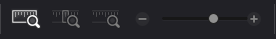
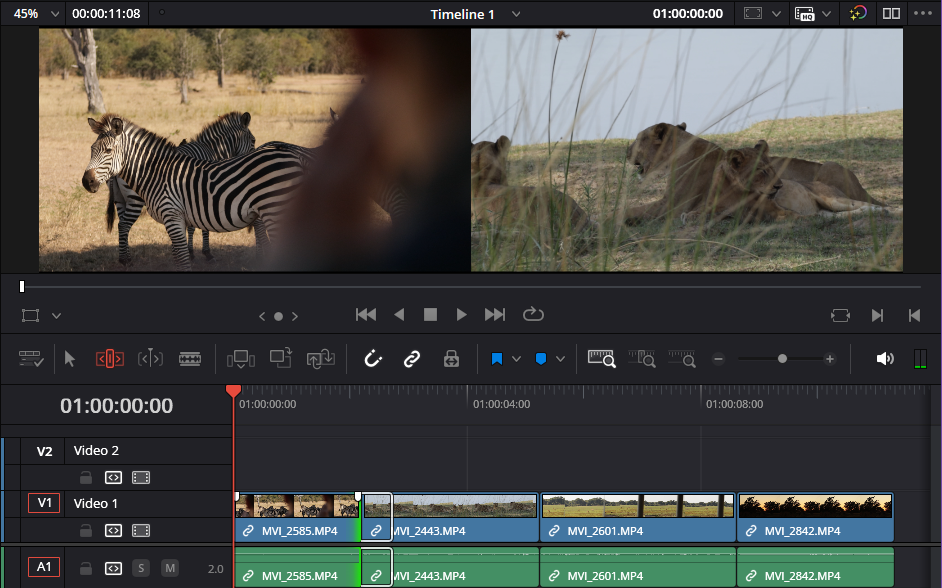
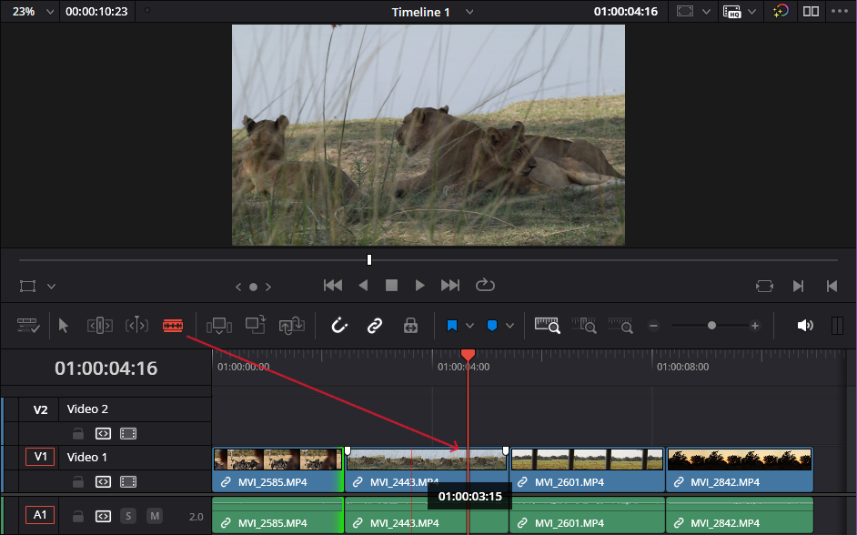

Use the Edit Page
Overview
Use the Edit Page to fine-tune your timeline with precise trimming and cutting tools. Use the media pool window on the left to select clips in your project. The timeline viewer shows a preview of your edits.
Navigating the timeline
Adjust how much of the timeline you see with the zoom control buttons:
- Use Full Extent Zoom to view the entire timeline.
- Use Detail Zoom to see a close-up next to the playhead.
- Use the slider to set a custom zoom level, and use Custom Zoom to return to that view.

Procedure: Trim clips in the timeline
- Select Trim Edit Mode in the timeline window
-
Select and hold the in or out point of the clip you want to trim
- Drag left or right to trim the clip
- Release the clip to set the new in or out point

Procedure: Use blade tool for cuts
- Select Blade Edit Mode in the timeline window, or select B on your keyboard.
- Line up the blade tool with the point that you want to split a clip.
- Select the clip at the blade position to create a cut.

Tips
Use the timeline viewer to preview the frames before and after a cut.
Overlapping clips in the Edit Page may replace part of a clip on the timeline.
Timeline: a sequence of clips arranged in the editor.
Playhead: a marker that shows the current position in a timeline or clip.
Trim edit tool: a tool used to non-destructively adjust the start and end of a clip in the timeline.
Blade edit tool: a tool used to split clips in the timeline.